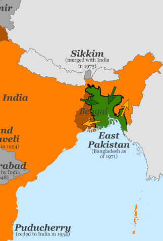
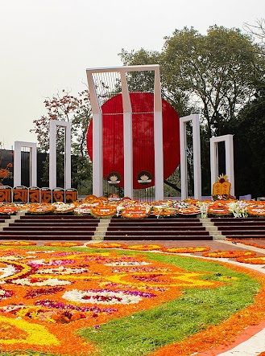
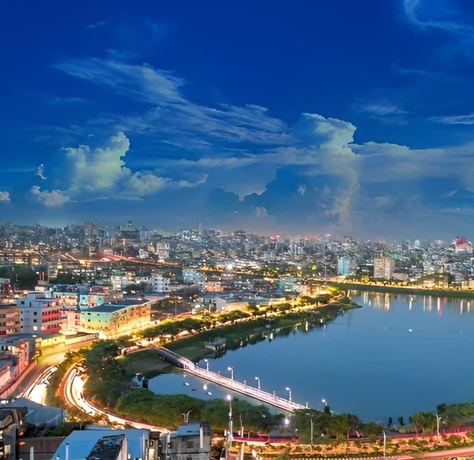

1947
The Partition of Bengal in 1947.The Hindu-majority West Bengal became a state of India, and the Muslim-majority East Bengal (now Bangladesh) became a province of Pakistan.

1952
The Bengali language movement was a political movement in former East Bengal advocating the recognition of the Bengali language as an official language

1971
In 1971 Bangladesh fought the Bangladesh Liberation War against Pakistan to become an Independent country.

2023
today Bangladesh is a peaceful country and one of the fastest growing economies in the world